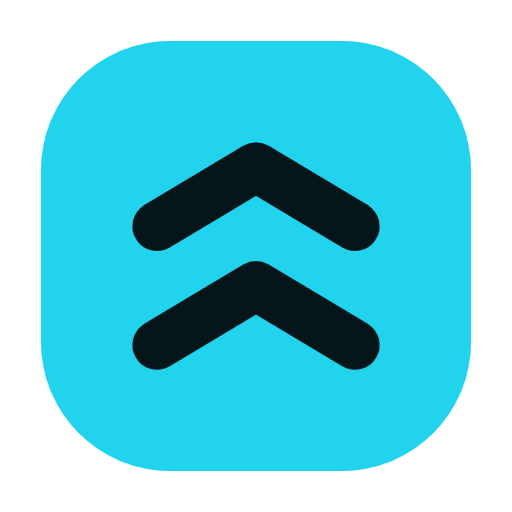
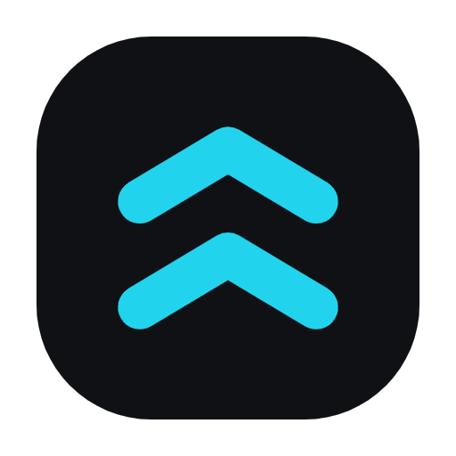
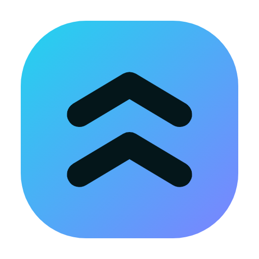
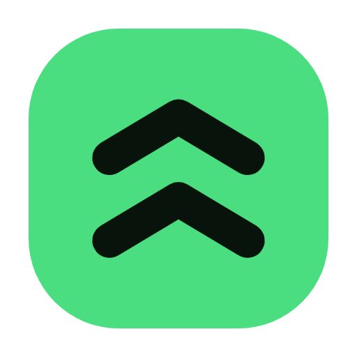
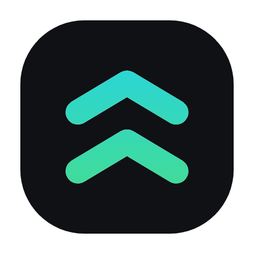
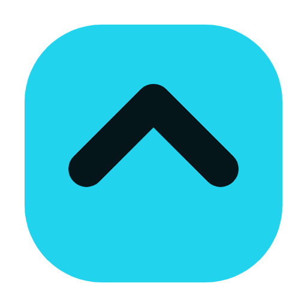
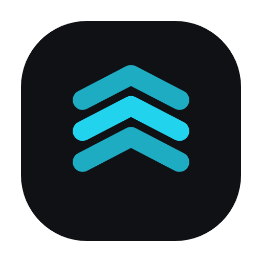
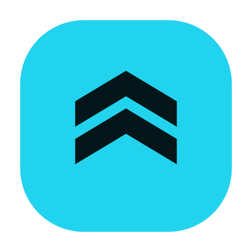
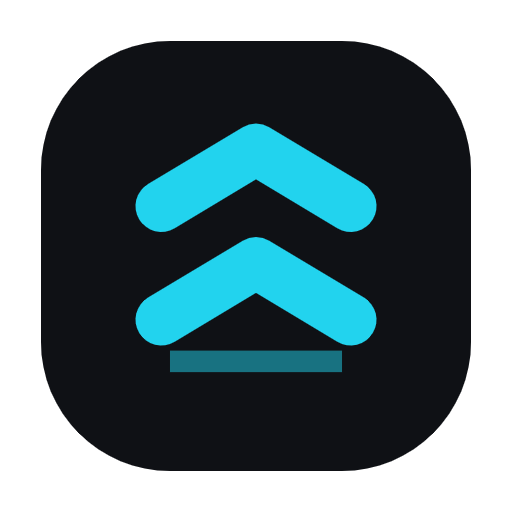
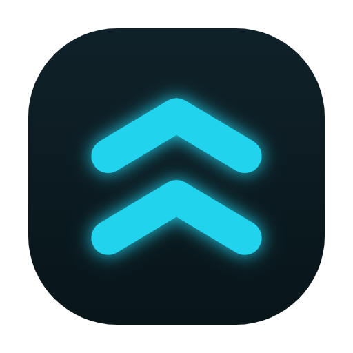

ShapeUp · 10 opciones de ícono de app (revisá a tamaño grande + a 48px como en la home)

V1 · Ion sólido
cian + chevron oscuro (actual)

V2 · Oscuro/cian
inverso, chevron cian

V3 · Gradiente
cian→indigo

V4 · Volt
verde original

V5 · Chevron gradiente
oscuro + cian→verde

V6 · Chevron único
un solo galón, simple

V7 · Triple
3 galones, dinámico

V8 · Chevron lleno
sólido, más peso

V9 · Con base
chevron + suelo

V10 · Glow
oscuro + brillo cian
A 48px (tamaño real en la pantalla de inicio)